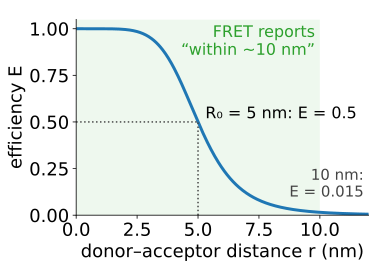
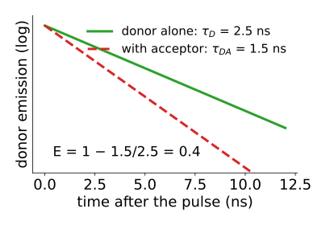
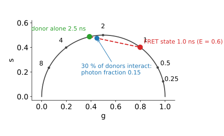
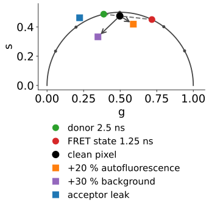
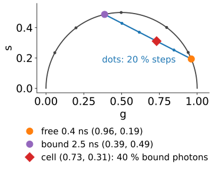
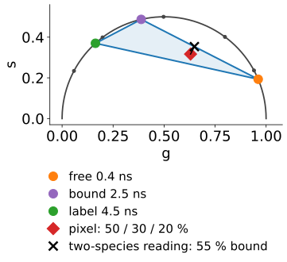

Two applications that use everything of the day: lifetimes, fits with few photons, and phasors.
FRET by lifetime: an acceptor nearby shortens the donor’s lifetime; E = 1 - \tau_{DA}/\tau_D.
Efficiency vs fraction: how strongly the molecules interact, and how many of them do. A single mean lifetime mixes the two; a bi-exponential fit or the phasor line separates them.
Pitfalls: environment, autofluorescence, acceptor emission leaking into the donor channel, few photons.
Metabolic imaging: NADH without labels, free vs protein-bound, on the phasor plot.
From pixels to a per-cell result.
Slides titled The math give the formulas and proofs; the ideas are complete without them.
From the FRET day (enough to follow if you did not take it):
An acceptor molecule within a few nanometres takes the energy of the excited donor, without light.
The efficiency E (the fraction of excitations transferred) falls steeply with the distance r: E = 1/(1 + (r/R_0)^6), half at the Förster distanceR_0 \approx 5 nm.
So FRET reports “within about 10 nm”, far below the resolution of the microscope. Colocalisation (coloc) only says “in the same diffraction-limited pixel” (about 200 nm).

For this day: transfer is another way for the donor to leave the excited state. So its lifetime shortens.
FRET efficiency from lifetimes
E = 1 - \frac{\tau_{DA}}{\tau_D}
\tau_D: the donor alone (a donor-only control, same cells, same conditions); \tau_{DA}: the donor with the acceptor.
Example: \tau_D = 2.5 ns, \tau_{DA} = 1.5 ns: E = 0.4, and with R_0 = 5 nm, r ≈ 5.35 nm.
Why lifetime beats intensity here: only the donor is recorded. No need to know concentrations, and acceptor bleed-through and cross-excitation (the corrections of intensity FRET, recalling crosstalk) do not enter.

The math: FRET rates
The donor leaves the excited state at rate 1/\tau_D alone, plus a transfer rate k_T = \tau_D^{-1}(R_0/r)^6 with the acceptor:
Distance from efficiency: r = R_0\,(1/E - 1)^{1/6}.
R_0 depends on the relative orientation of the two molecules (the factor κ², usually assumed 2/3 for freely rotating dyes): distances from E are estimates, ratios of E are more robust.
Efficiency vs interacting fraction
A pixel holds donors that interact (lifetime \tau_{DA}) and donors that do not (\tau_D): a mixture of two lifetimes.
E: how strongly an interacting donor transfers (the distance in the complex).
α: which fraction of donors interact (how much complex there is).
A single mean lifetime mixes the two: all donors at E = 0.3, or 71 % of donors at E = 0.6, give the same intensity-weighted mean lifetime, 1.75 ns (with \tau_D = 2.5 ns).
Separate them by a bi-exponential fit with \tau_D fixed from the control (global analysis of the decay unit makes it work at FLIM photon counts), or by the phasor line (next slide).
The FRET trajectory is the curve P(E) for E from 0 to 1 at a given α (and background, autofluorescence): for α = 1 it is the semicircle itself.
On the phasor plot

The donor alone sits on the semicircle. The FRET state sits further right (shorter).
Pixels lie on the line between them; the line, extended to the semicircle, gives \tau_{DA} and so E; the position along it gives the photon fraction, hence α.
30 % of donors interacting puts the point only 15 % of the way along: closer to the donor than you think.
Try it: FRET on the phasor plot
Pitfalls
The donor’s own lifetime depends on its environment (pH, binding, refractive index): always a donor-only control in the same cells and conditions.
Autofluorescence adds a third species: the cloud leaves the donor line, and a two-species analysis assigns the extra short lifetime to FRET (too high E and α).
Acceptor emission leaking into the donor channel: it is excited through FRET, so it rises before it decays (a “negative amplitude”). Its phasor is the product P_{DA}P_A and lies outside the semicircle; enough of it pulls pixels outside too. Use a tighter emission filter.
Background pulls the cloud towards (0, 0): the line from the donor point tilts. Fit or subtract it.
Few photons: noisy fractions, clipped at 0, are biased upwards. Bin, or use global analysis.

Metabolic imaging: NADH
NADH (and NADPH, indistinguishable optically) fluoresces without any label, under two-photon infrared or UV excitation.
Free NADH: ≈ 0.4 ns. Protein-bound NADH: ≈ 2 to 3 ns.
A cell’s phasor cloud lies on the line between free and bound; its position = the fraction bound.
More free NADH tends to go with glycolysis, more bound with oxidative phosphorylation: an indicator of metabolic state, a tendency, not a rule.
FAD, the other autofluorescent coenzyme, behaves the other way round; the ratio of the two intensities is the “redox ratio”.
Example at 80 MHz: free (0.96, 0.19), bound (0.39, 0.49), a cell at (0.73, 0.31): 40 % of the photons come from bound NADH, but only 10 % of the molecules (if both forms are equally bright per unit lifetime).

Three components: a triangle
A pixel with free NADH, bound NADH and a label (or a second bound form) lies inside the triangle of the three phasors.
The three fractions are its barycentric coordinates: the simplex of endmembers, in a fixed 2D projection.
Ignoring the third species biases the two-species answer: pixels with the label are pulled towards its corner, and the lever rule misreads them.
Four or more components need more equations: a second harmonic (2ω) or spectral channels as well.

The math: three fractions
Three known phasors P_1, P_2, P_3 and a pixel P; photon fractions \mathbf f:
Unique if the three points are not on one line. All f_k \ge 0 iff P is inside the triangle.
Molecule fractions from photon fractions: \alpha_k \propto f_k/\tau_k, assuming all forms have the same radiative rate (photons per molecule ∝ lifetime).
Try it: a FRET cell and a NADH cell
From pixels to a result
Segment the cells on the intensity image (thresholding, watershed).
Per cell: the mean lifetime with its photon count, or the interacting / bound fraction (global analysis or the phasor line), and which mean was used.
Show the phasor histogram per condition: shifts along a line are changes in fraction; shifts off the line are a new species or an artefact.
Compare cells and experiments with the statistics of the evaluation day: cells are not independent replicates of an experiment.
Per-object values become columns of the feature table.
Summary
FRET adds a way out of the excited state: the donor’s lifetime shortens, E = 1 - \tau_{DA}/\tau_D, with a donor-only control.
Lifetime FRET records only the donor: no concentrations, no bleed-through corrections.
A mixture of interacting and free donors: E (how strongly) and α (how many) are separate questions; a mean lifetime confuses them. Bi-exponential fits with \tau_D fixed, or the phasor line from the donor point, separate them.
Photon fractions underweight the quenched state: 30 % interacting donors give only 15 % of the photons.
Pitfalls: environment, autofluorescence (a third corner), acceptor leak (outside the semicircle), background, few photons.
NADH: free (0.4 ns) and bound (2–3 ns) on a line; fraction bound as a metabolic indicator; three species fill a triangle.